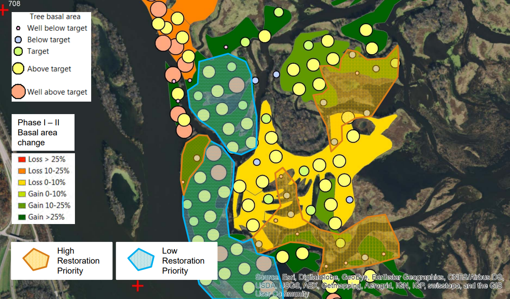

Taking forest inventory is similar to taking inventory in a store: it’s the process of carefully identifying, counting, and measuring all the trees (and sometimes other species, such as shrubs or ground cover) within a given area, or plot. Plots are typically spread throughout the forest in a grid pattern. Spacing the plots out evenly like this allows foresters to get a good idea of what is going on in a forest without needing to measure each individual tree. Because forests change over time inventories are often repeated, using the same plot locations, every 5 to 10 years. Inventories are most useful when repeated because then foresters can begin to see changes over time and adjust how they manage the forest based on those changes. For example, if the forest is getting too crowded, a forester may recommend less healthy trees be thinned out to allow the healthiest trees to have more growing space.
In addition to identifying the tree species, foresters also measure each tree in several ways. This includes estimating the tree’s height, measuring its diameter, gauging its general health (is it very healthy? Or is its health declining, even dead?), and noting where it sits in the canopy (is it one of the tallest around, shading out smaller trees? Is it one of the trees being shaded out?). In some plots, around 10% of the total number, one tree will also have a core sample taken to estimate its age. Each plot will also have the “openness” of its canopy assessed (i.e. how much of the sky is visible between the trees).
As mentioned above, foresters aren’t only interested in the trees. If there are shrubs, ground cover, or other rare plant species present in the plot, these will often have their presence recorded as well. Some common examples include shrubs like red/white mulberry or buttonbush, and ground cover species such as wood nettles, poison ivy, and grape vine.
This is an example of the data collected from a forest inventory of the Pecan Grove unit, just north of Quincy, IL.
How to use:
- Toggle data layers on and off using the "eye" icons in the top right corner
- Click on a point to bring up more information about it
- Zoom in to see more detail
- Use the icon in the bottom-left corner to switch to satellite imagery
Yes. Foresters use a combination of three types of plots when conducting a forest inventory. The first two, prism plots and fixed-radius plots, refer to the way the size of the plot is determined. The third type, age plots, refer to the fact that an additional piece of information (a tree’s age) will be collected at that plot. An age plot can be either a prism or fixed-radius plot.
A fixed-radius plot is a circular plot, usually 1/10th of an acre in size. Using a measuring tape fixed to plot center, the forester will work their way around the plot, counting every tree. As long as the center of a tree is within the plot radius, it will be counted – the entire tree does not need to be inside the plot. This is one of the most commonly used methods for conducting a forest inventory.
With a fixed-radius plot, it’s easy to determine which trees are “in” or “out” of the plot. Because the plot boundaries are fixed, comparing inventories from year to year (or decade to decade) is straightforward and you can form a clear picture of how this exact part of the forest has changed over time.
Because every tree in the plot is counted, completing an inventory can be time consuming if the plot is full of many small trees. To combat this problem, sometimes inventories will set limits on the size of tree to be counted – only trees over 4” in diameter, for example.
A prism is a small wedge-shaped piece of glass, often used to refract light. Forestry prisms are made in several different sizes each capable of measuring a different sized plot. To use one, the forester stands in the exact center of the plot and looks through the prism, holding it a specific distance away from their face. If a tree’s trunk overlaps with the image of the trunk in the prism, the tree is considered “in” the plot and it is counted. If the trunk and the image of the trunk do not overlap, the tree is “out” and it is not counted. With this system, the further away from center a tree is the larger its diameter must be for it to be “in.”
See below for an example of what it looks like to use a prism. Image courtesy of the Alabama Cooperative Extension System. Click here for their full in-depth discussion of prism plots.
Figure 4: The tree and its image in the prism overlap, so this tree is in.
Figure 5: This tree is borderline. It will need to have its diameter and distance from plot center carefully measured to determine whether it is in or out.
Figure 6: This tree has no overlap, so it is out.
Prism plots can often be completed faster than a fixed-radius plot because the decision of whether or not to count a tree can be made within seconds. They are also better suited to stands composed primarily of larger trees, which is often the case in bottomland forests along the Mississippi River.
One of the primary downsides to using prism plots is that they rely on line-of-sight. In a plot with thick brush or simply a lot of trees, obtaining a clear view of each tree through the prism can be difficult. Additionally, borderline trees take additional measuring and math to determine if they should be counted. If there are many borderline trees in a plot, sampling may take longer than in a fixed-radius plot
Yes, typically the same data is collected in both types of plot. However because the methods are different for determining which trees to count within each plot, the inventories from each type are usually kept separate and analyzed in slightly different ways. Fixed-radius plots are better suited for calculating the total number of trees per acre, while prism plots are better for calculating the total volume of wood (or “basal area”) per acre.
To measure the age of a tree, we must count its rings. The easiest way to get to the rings is to cut the tree down, but that is time-consuming, dangerous, and requires foresters to bring along extra equipment. Rather than cut down every tree whose age we want to measure, foresters use a specialized tool called an increment borer to drill into the tree and extract a small, pencil-sized sample of its wood. The rings on the sample can be counted and recorded immediately but depending on the tree species or the condition of the sample, the rings may be difficult to see. In that case, the sample can later be processed in a lab where it will be carefully dried and examined under a microscope to better see the rings.
In areas with a clear distinction between growing and dormant seasons (such as here in North America and unlike areas close to the equator), as long as the rings in a sample are clear enough, it can be dated very precisely. If the rings in a sample are less clear, it can be compared to samples from other trees that grew in the same area. Trees that grew under the same weather conditions and were exposed to the same annual cycles of rain and drought will show the same patterns in their rings. By comparing the patterns of thick and thin rings, a broken or difficult to read sample can be compared to a sample of a known age. If the patterns match, you can then make a good estimate of the age of that tree.
Click here to learn more about dendrochonology, the study of tree rings.
Based on the width of the growth rings we can make an assumption about the conditions the tree found itself in that year. Wide rings indicate that it was a good year for growing - likely the area received plenty of rain that year. Narrow rings indicate conditions that year were less favorable - maybe the tree faced drought or disease. While the information tree rings give us are all about the past, knowing the forest’s history can help us make more informed decisions about how we manage the forest in the future.
Check out this video from Brigham Young University to learn more about what tree rings can tell us about an area's history:
First and foremost, having an accurate inventory of forest resources helps foresters design management plans that will best suit the tree species and conditions present in that forest. A plan designed for a forest of mature silver maple might not work as well in a forest composed mostly of young hickory and oak.
In addition, forestry can be an important component in larger projects. Habitat Rehabilitation and Enhancement Projects (HREPs, read more about them here) often incorporate forestry into the planning process when deciding how best to improve a degraded site. Even if the HREP doesn’t include forestry practices (such as tree thinning or planting) as part of the final project, knowing what condition the forested part of the project area is in may help inform decisions elsewhere in the project.
In the image below, you can see how many factors come together to help select a restoration project site.
First, there’s basal area: this is a measure of how many trees there are per acre, and how large they are. If the basal area is below target, that means the area has less than the ideal number of trees, or the trees that are there are still small. If the basal area is above the target then that area may need to be thinned out to allow the remaining trees more room to grow.
Second, by revisiting the same plots every few years, we can see how the site changes over time. A site that has maintained or grown its basal area is probably doing pretty well. But if it has lost basal area, especially by more than 25%, something might need to be done to prevent further loss.
Putting those two together we can start ranking areas in terms of restoration priority. An area that’s been gaining basal area and is now at or above the target probably will be a low priority for restoration work. However, an area that hasn’t been gaining or has lost basal area and is below or well below target is a perfect spot for some restoration!
